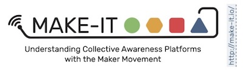

The interactive Technology Radar (also called TechRadar) describes future technology developments or trends that will impact how makers will create, communicate, organize and might even do business.
Its purpose is to provide state-of-the-art overviews of both: 1) Information and Communication Technology (ICT) and related applications developed and/or used by The results of this research will help to understand the uses and impacts of CAPS in different contexts, as well as of the Maker movement itself., and 2) maker technology developed and/or used by makers. This will include the relationships and mutual complementary of the two. In this way, it developes forward scenarios and a watching brief of these two technology areas and how they are used by The results of this research will help to understand the uses and impacts of CAPS in different contexts, as well as of the Maker movement itself. and maker communities both respectively and in combination.
The TechRadar consists of 3 sections:
It has been a deliberate decision to use as many open source components as possible for the implementation of the website. At the same time is the technical implementation of the website is also available as a public repository on GitHub at https://github.com/Make-IT-TR/TechRadar. It uses the MIT Licence making it available for other to use and/or enhance where possible. The issues section of the repository will also be used as a collaboration tool to discuss future work.
The TechRadar has been developed within MAKE-IT, a Horizon 2020 European research project focused on how the role of Collective Awareness Platforms (CAPS) enables the growth and governance of the Maker movement, particularly in relation to Information Technology, using and creating social innovations and achieving sustainability.
To understand how the role and impact of CAPS approaches the Maker movement, MAKE-IT undertakes multidisciplinary research in different fields including: behavioural studies, social psychology, sociology, management information systems, economics, environmental science, technological impact and governance issues. The results of this research will help to understand the uses and impacts of CAPS in different contexts, as well as of the Maker movement itself. MAKE-IT will focus the research specifically on the role of CAPS in:
Read more about MAKE-IT here:
